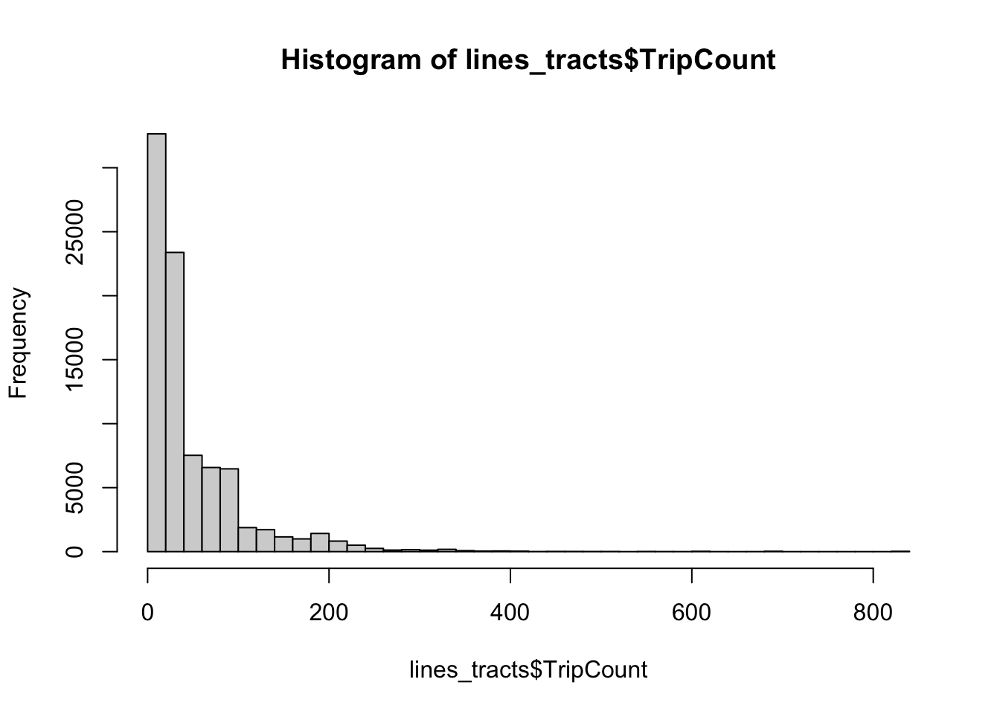
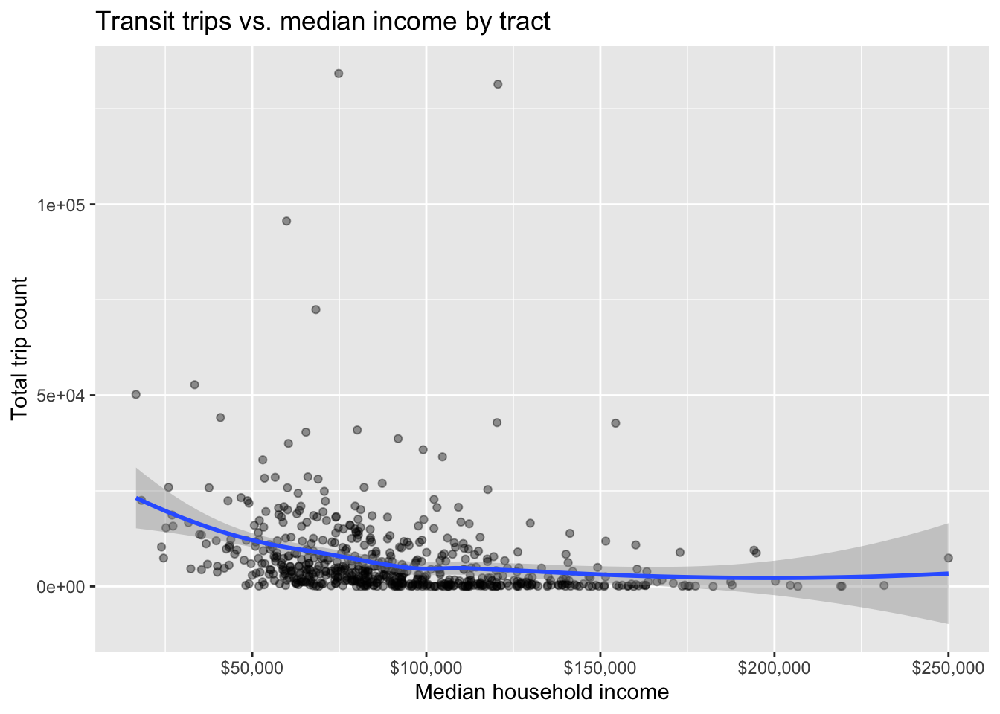
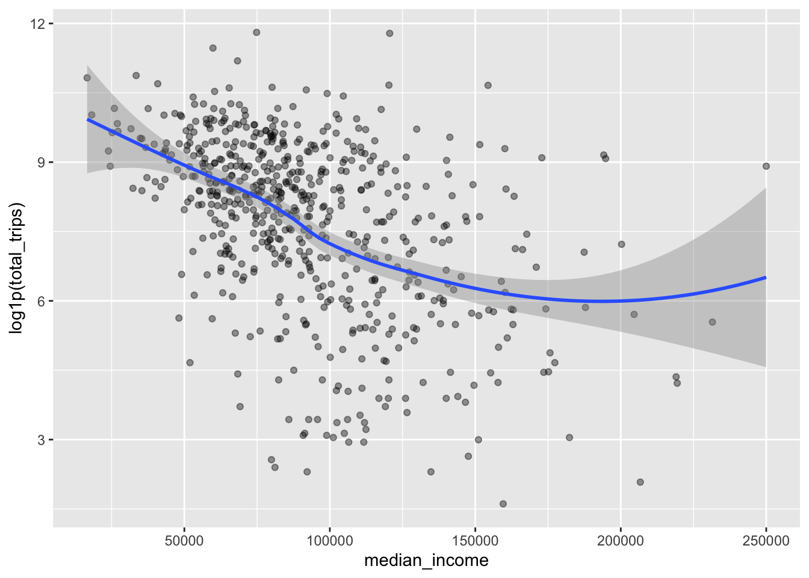
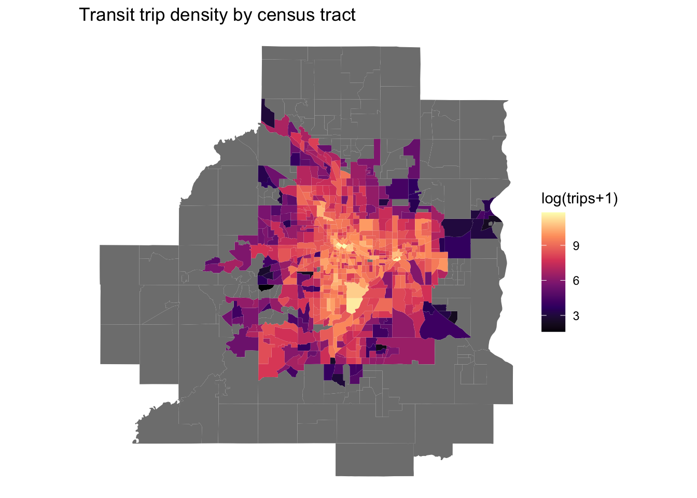
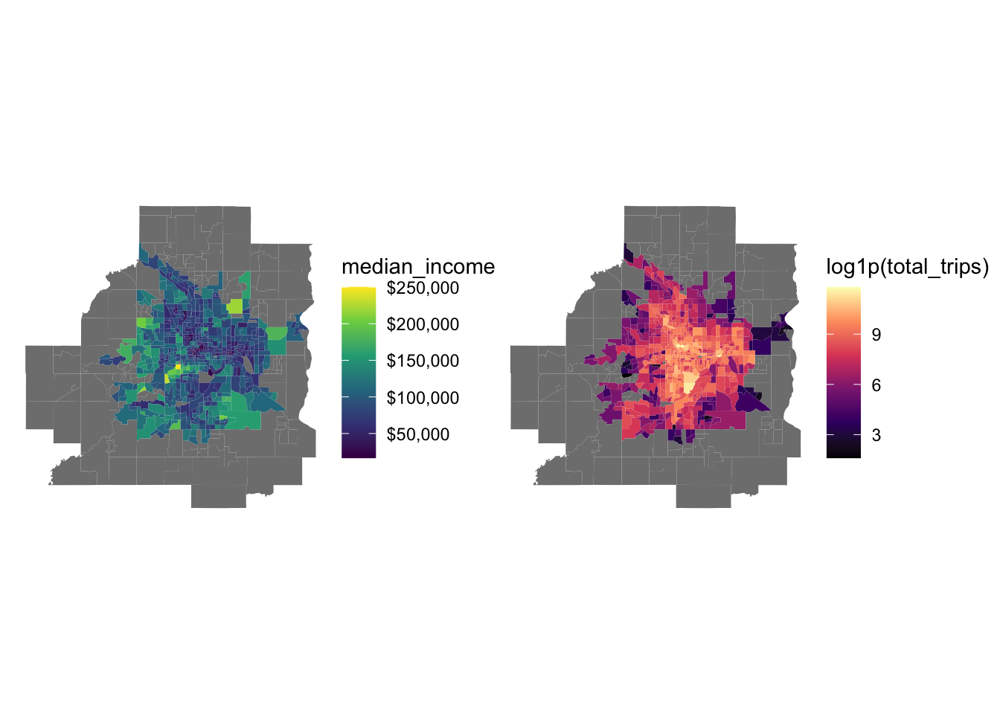
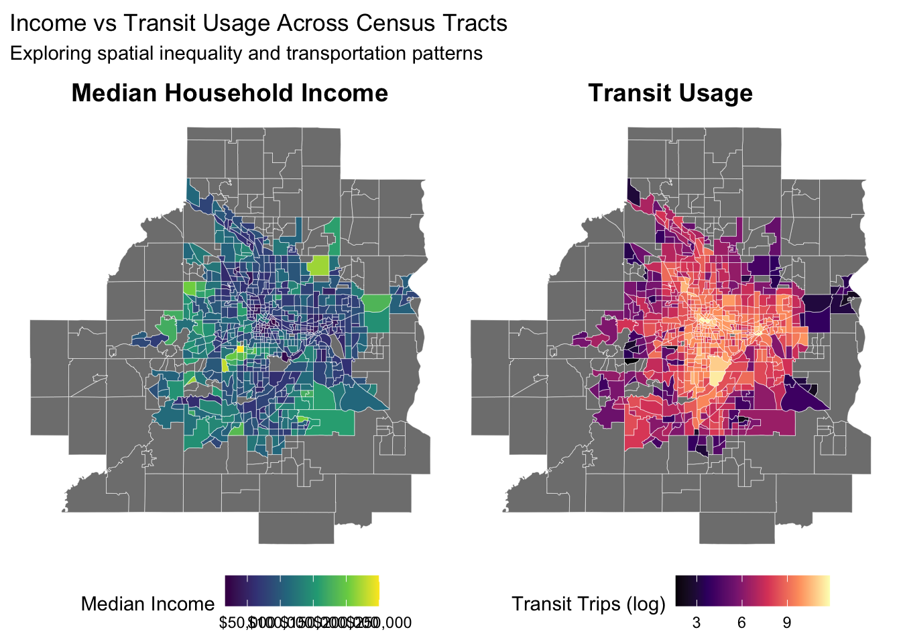

Member 1 Hadley W
Your exploratory data analysis of the team datasets go here.
Reading layer `TransitCountHeadwaySummary' from data source
`/Users/hadleywilkins/Documents/COMP212/project-metrotransit-rishika-hadley/data/raw/shp_trans_transit_count_headway_sum'
using driver `ESRI Shapefile'
Simple feature collection with 75634 features and 23 fields
Geometry type: MULTILINESTRING
Dimension: XY
Bounding box: xmin: 442648 ymin: 4948258 xmax: 515316.2 ymax: 5020153
Projected CRS: NAD83 / UTM zone 15NCode
|
| | 0%
|
|= | 2%
|
|== | 2%
|
|=== | 4%
|
|==== | 6%
|
|===== | 6%
|
|====== | 8%
|
|====== | 9%
|
|======= | 10%
|
|======== | 11%
|
|========= | 13%
|
|========== | 14%
|
|=========== | 15%
|
|=========== | 16%
|
|============ | 18%
|
|============= | 18%
|
|============== | 20%
|
|=============== | 21%
|
|================ | 23%
|
|================= | 25%
|
|================== | 26%
|
|==================== | 28%
|
|===================== | 30%
|
|====================== | 31%
|
|======================= | 33%
|
|======================== | 34%
|
|========================= | 36%
|
|========================== | 38%
|
|============================ | 39%
|
|============================= | 41%
|
|============================== | 43%
|
|=============================== | 44%
|
|================================ | 46%
|
|================================= | 47%
|
|================================== | 49%
|
|=================================== | 51%
|
|===================================== | 52%
|
|====================================== | 54%
|
|======================================= | 55%
|
|======================================== | 57%
|
|========================================= | 59%
|
|========================================== | 60%
|
|=========================================== | 62%
|
|============================================ | 64%
|
|============================================== | 65%
|
|=============================================== | 67%
|
|================================================ | 68%
|
|================================================= | 70%
|
|================================================== | 72%
|
|=================================================== | 73%
|
|==================================================== | 75%
|
|====================================================== | 77%
|
|======================================================= | 78%
|
|======================================================== | 80%
|
|========================================================= | 81%
|
|========================================================== | 83%
|
|=========================================================== | 85%
|
|============================================================ | 86%
|
|============================================================= | 88%
|
|=============================================================== | 89%
|
|================================================================ | 91%
|
|================================================================= | 93%
|
|================================================================== | 94%
|
|=================================================================== | 96%
|
|==================================================================== | 98%
|
|===================================================================== | 99%
|
|======================================================================| 100%Coordinate Reference System:
User input: NAD83
wkt:
GEOGCRS["NAD83",
DATUM["North American Datum 1983",
ELLIPSOID["GRS 1980",6378137,298.257222101,
LENGTHUNIT["metre",1]]],
PRIMEM["Greenwich",0,
ANGLEUNIT["degree",0.0174532925199433]],
CS[ellipsoidal,2],
AXIS["latitude",north,
ORDER[1],
ANGLEUNIT["degree",0.0174532925199433]],
AXIS["longitude",east,
ORDER[2],
ANGLEUNIT["degree",0.0174532925199433]],
ID["EPSG",4269]]Coordinate Reference System:
User input: NAD83 / UTM zone 15N
wkt:
PROJCRS["NAD83 / UTM zone 15N",
BASEGEOGCRS["NAD83",
DATUM["North American Datum 1983",
ELLIPSOID["GRS 1980",6378137,298.257222101,
LENGTHUNIT["metre",1]]],
PRIMEM["Greenwich",0,
ANGLEUNIT["degree",0.0174532925199433]],
ID["EPSG",4269]],
CONVERSION["UTM zone 15N",
METHOD["Transverse Mercator",
ID["EPSG",9807]],
PARAMETER["Latitude of natural origin",0,
ANGLEUNIT["Degree",0.0174532925199433],
ID["EPSG",8801]],
PARAMETER["Longitude of natural origin",-93,
ANGLEUNIT["Degree",0.0174532925199433],
ID["EPSG",8802]],
PARAMETER["Scale factor at natural origin",0.9996,
SCALEUNIT["unity",1],
ID["EPSG",8805]],
PARAMETER["False easting",500000,
LENGTHUNIT["metre",1],
ID["EPSG",8806]],
PARAMETER["False northing",0,
LENGTHUNIT["metre",1],
ID["EPSG",8807]]],
CS[Cartesian,2],
AXIS["(E)",east,
ORDER[1],
LENGTHUNIT["metre",1]],
AXIS["(N)",north,
ORDER[2],
LENGTHUNIT["metre",1]],
ID["EPSG",26915]] [1] "service_id" "line_direc" "RoadSeg_ID" "EAM_count" "AMP_count"
[6] "MID_count" "PMP_count" "EVE_count" "NIGHT_coun" "OWL_count"
[11] "TripCount" "EAM_hdwy" "AMP_hdwy" "MID_hdwy" "PMP_hdwy"
[16] "EVE_hdwy" "NIGHT_hdwy" "OWL_hdwy" "created_us" "created_da"
[21] "last_edite" "last_edi_1" "Shape_Leng" "GEOID" "NAME"
[26] "variable" "estimate" "moe" "geometry" [1] 0[1] 0 Min. 1st Qu. Median Mean 3rd Qu. Max.
1.00 15.00 31.00 49.29 64.00 836.00 
[1] 177Code
# Scatterplot with a smoother
ggplot(metro_tracts, aes(x = median_income, y = total_trips)) +
geom_point(alpha = 0.4) +
geom_smooth(method = "loess") +
scale_x_continuous(labels = scales::dollar) +
labs(title = "Transit trips vs. median income by tract",
x = "Median household income", y = "Total trip count")
Code

Code

Code
# Side-by-side income vs transit
library(patchwork)
p1 <- ggplot(metro_tracts) + geom_sf(aes(fill = median_income), color = NA) +
scale_fill_viridis_c(labels = scales::dollar) + theme_void()
p2 <- ggplot(metro_tracts) + geom_sf(aes(fill = log1p(total_trips)), color = NA) +
scale_fill_viridis_c(option = "magma") + theme_void()
p1 + p2
Code
library(patchwork)
common_theme <- theme_void() +
theme(
plot.title = element_text(size = 14, face = "bold", hjust = 0.5),
legend.position = "bottom"
)
p1 <- ggplot(metro_tracts) +
geom_sf(aes(fill = median_income), color = "white", size = 0.1) +
scale_fill_viridis_c(labels = scales::dollar, name = "Median Income") +
labs(title = "Median Household Income") +
common_theme
p2 <- ggplot(metro_tracts) +
geom_sf(aes(fill = log1p(total_trips)), color = "white", size = 0.1) +
scale_fill_viridis_c(option = "magma", name = "Transit Trips (log)") +
labs(title = "Transit Usage") +
common_theme
p1 + p2 +
plot_annotation(
title = "Income vs Transit Usage Across Census Tracts",
subtitle = "Exploring spatial inequality and transportation patterns"
)
Code
Simple feature collection with 7 features and 4 fields
Geometry type: POLYGON
Dimension: XY
Bounding box: xmin: -94.0125 ymin: 44.47115 xmax: -92.73204 ymax: 45.4148
Geodetic CRS: NAD83
# A tibble: 7 × 5
county mean_trips mean_income n_tracts geometry
<chr> <dbl> <dbl> <int> <POLYGON [°]>
1 Hennepin 9017. 94164. 329 ((-93.42245 45.21142, -93.42491 45…
2 Ramsey 8724. 80077. 143 ((-93.22773 45.09318, -93.2277 45.…
3 Dakota 2796. 103268. 106 ((-93.31834 44.71754, -93.31841 44…
4 Anoka 2262. 81769. 90 ((-93.18871 45.12437, -93.18841 45…
5 Washington 2244. 100478 59 ((-92.98482 45.06589, -92.9848 45.…
6 Scott 1218. 112866. 32 ((-93.39859 44.79827, -93.39878 44…
7 Carver 334. 109313. 25 ((-93.61974 44.89141, -93.6349 44.…